De Puta Madre: A Love Story
Director
Catherine BlackActors
Catherine Black, Pierluca Arancio
Notable Festivals
Columbia Gorge International Film Festival '14 (Best Cinematography); Madrid International Film Festival '14 (Best Lead Actress); Filmmaker Festival of World Cinema London '15 (Best Director)

Logline
A picnic turns tense and dangerous as a kidnapped woman tries to escape her delusional ex-partner in a surreal story about obsession and letting go.
Press
Press — Bern Euler, Festival Director, Canadian Film Fest
“Sexy & Surreal”
Gallery
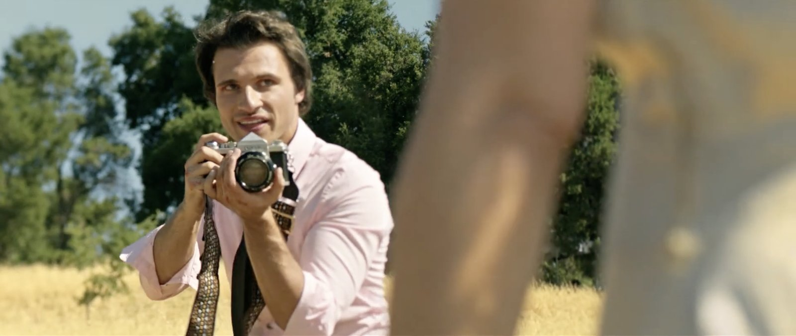
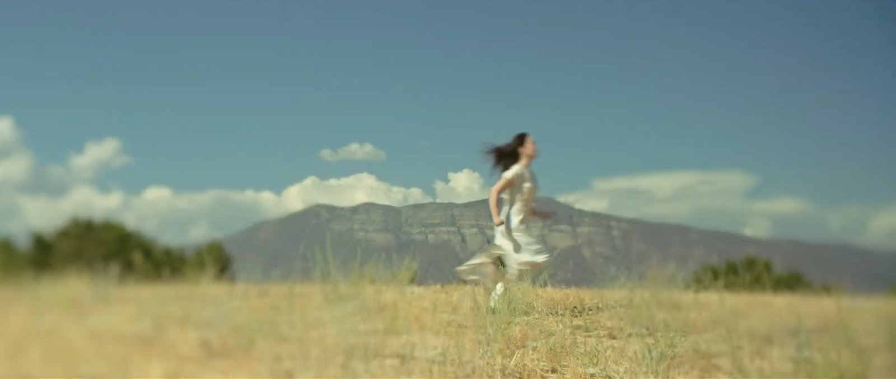
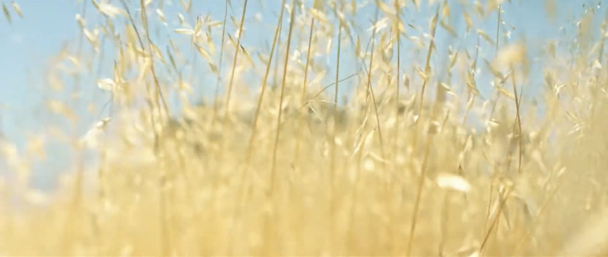
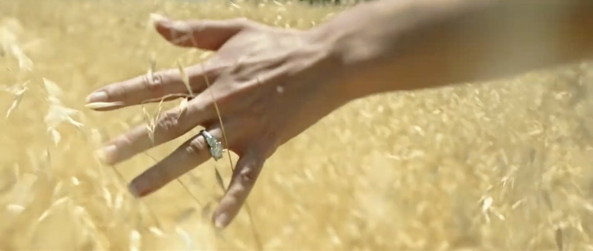
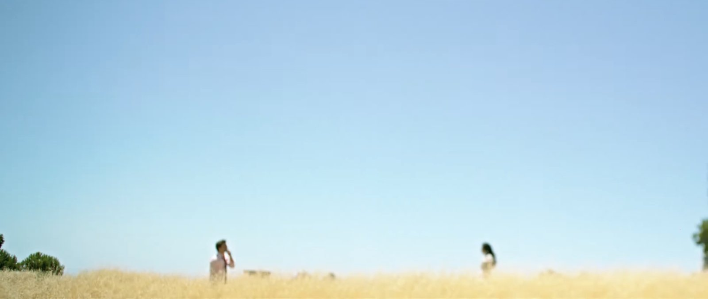
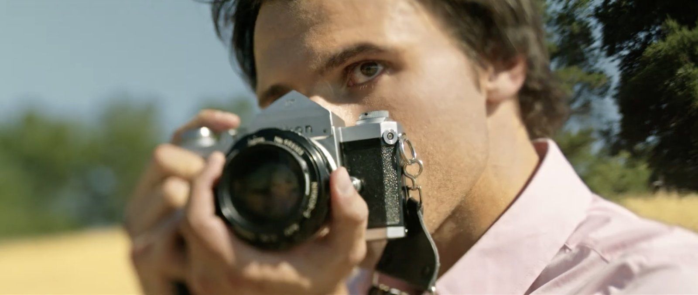
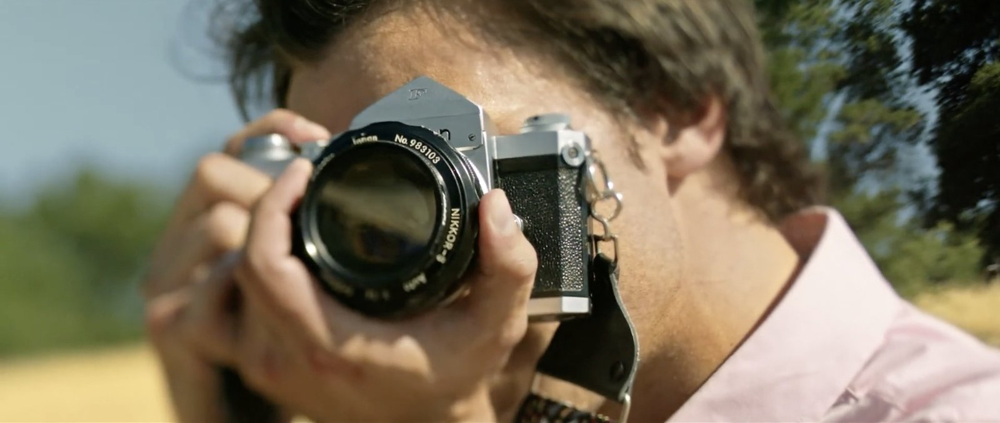
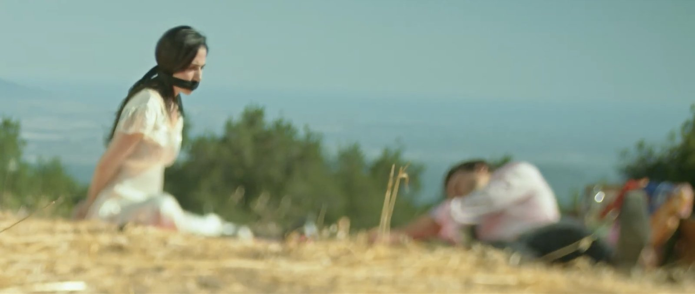
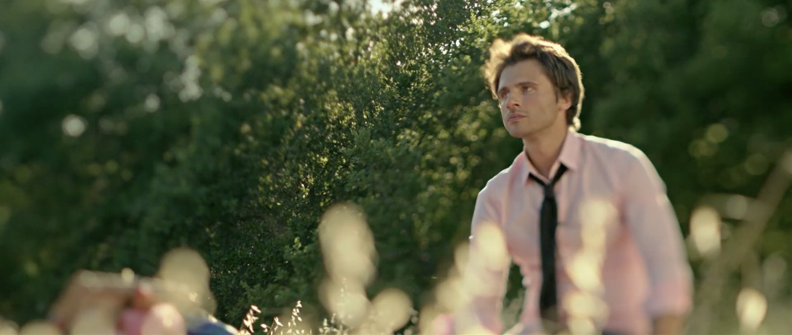
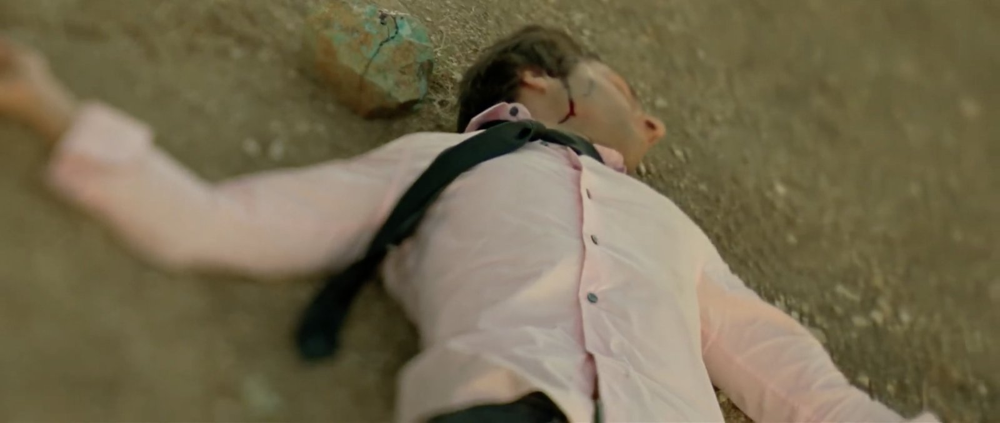
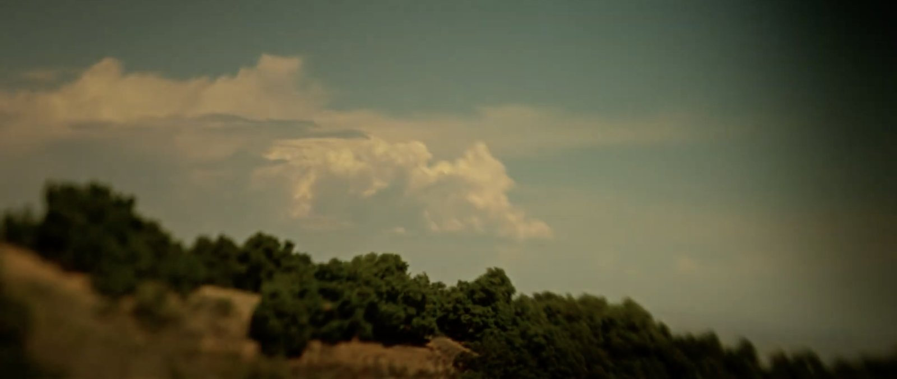
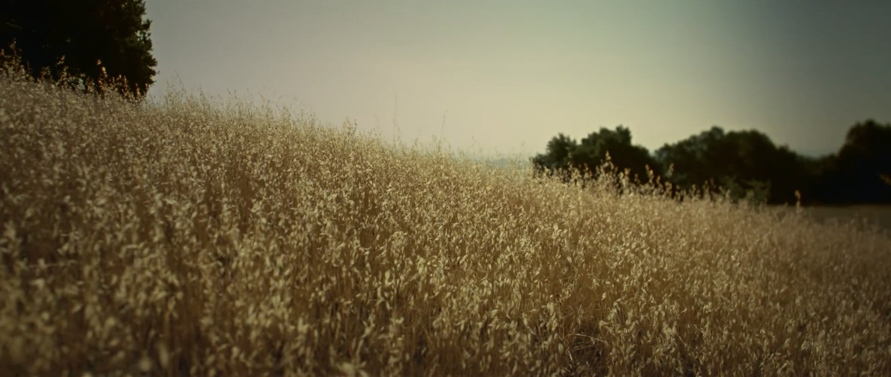
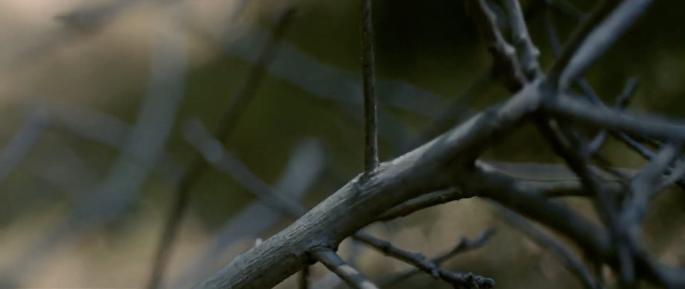
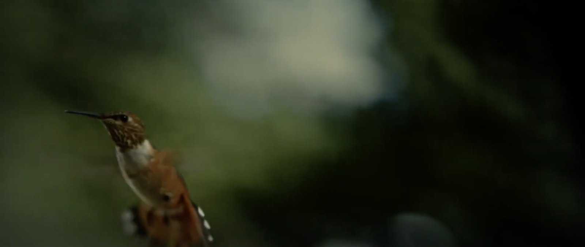
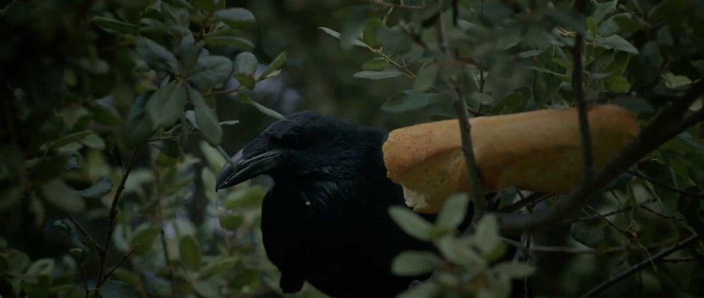
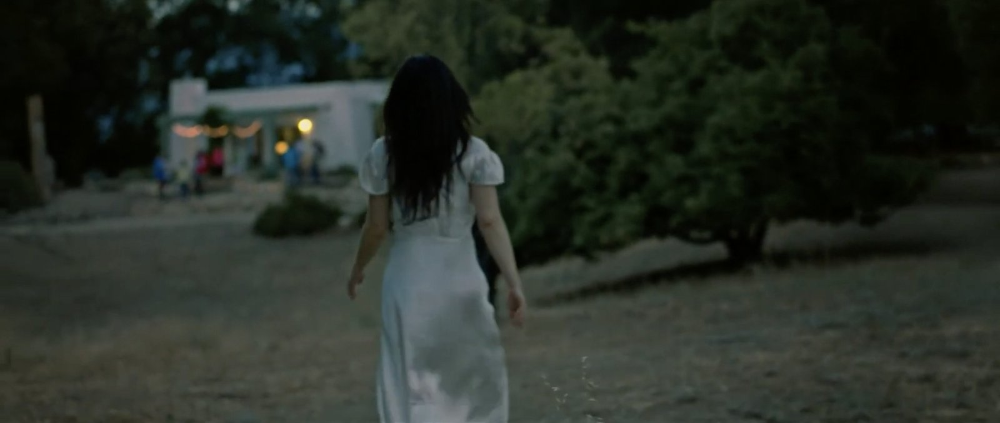
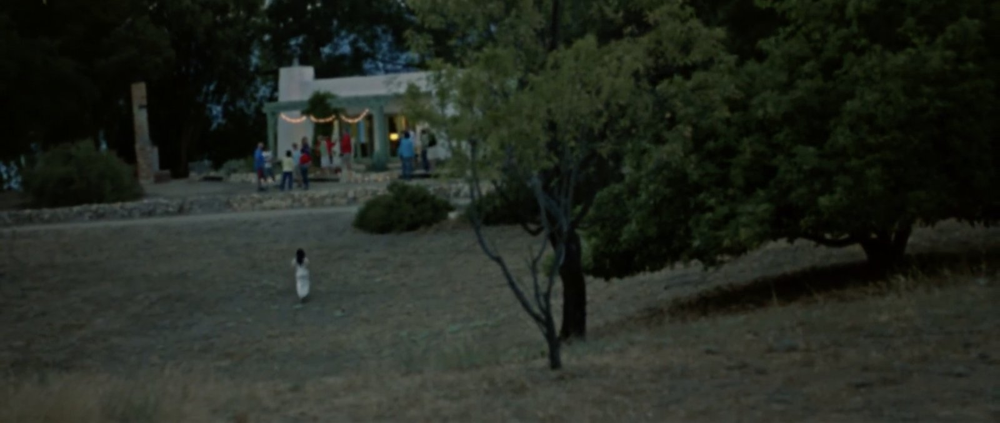